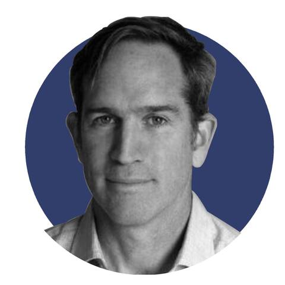

Credit: UNFCCC
SUSTAINABLE BUSINESS & FINANCE|#SDGs|OPINION
Published on 15 March 2021, 05:45

by Steve Rocco
SDGs: a global plan for investment in a post-Covid world
Covid-19 risks are unravelling significant progress across emerging markets. The US and Europe, with enormous resources, solid healthcare systems and vast service-based economies, have still struggled to control the spread, with over 1.3 million deaths reported so far. This contrasts with some least developed countries (LDCs), especially in Africa, where Covid-19 deaths have not been as serious as initially feared. However, the economic and social impacts have been severe and far-reaching.
Africa’s commodity-based economies with a smaller service-based sector and weaker institutions are much more strained. Zambia’s recent default on its Eurobond debt is a warning sign and other countries could follow. If other emerging market countries begin to default, all capital providers—from local banks to foreign private investors— could pull back at the very moment when entrepreneurship and impact investments are growing across emerging markets. It is exactly in these markets where SDG-linked investments are needed most.
Turning a crisis into action through the SDGs. The impact investing community has reacted to Covid-19 with a vast number of initiatives and collaborations. According to Duke University’s Center for Advancement of Social Enterprise (CASE), there are nearly 100 resources representing approximately $14.5bn in newly available capital sources for entrepreneurs affected by Covid-19 globally.
While it is important to commend these efforts, they lack a simple, homogeneous and universally recognised framework that would make them more systematic and effective. The sustainable development goals represent exactly that framework.
This framework was agreed upon by countries under the umbrella of the UN to develop a more equitable, sustainable future. Sustainability interacts with all human activities. The 17 goals, by design, cover nearly all human activity. This interconnectedness has been expressed by a universal framework adopted by 193 UN Member States. It is the best plan for the future the Earth has.
How are the SDGs being used today? Most large corporations, investors and impact entrepreneurs are using the SDGs to communicate their work in sustainable finance and impact. Examples are easy to find and are proof of the acceptance of the SDGs as the global sustainability framework. But when it comes to investors, we have found that the SDGs are not totally understood and, as a result, are not being used in an optimal way.
What investors do not know about the SDGs. Nearly all countries have created detailed plans for how their country will achieve these goals. These plans are a roadmap for a resilient, sustainable country, a goal shared by all investors focused on sustainability.
Each national SDG plan is unique to the country based on its resources, history, economic and social conditions. These plans include the policies, regulations, subsidies and tax policies created by the government to support this transition for each of the 17 goals.
Each goal has multiple targets with corresponding indicators so that progress toward a goal can be benchmarked, measured and reported. IRIS indicators have already been mapped to the SDG indicators. Investors can link their own impact measurement process to these SDG indicators. This would detail an investments attribution to a particular SDG target and goal.
Recent work by UNDP’s SDG Impact has begun translating these individual country plans into investor-friendly summaries of priority sectors and regions. These reports can be used as a roadmap by asset managers to invest alongside the government plan to build resilient, sustainable economies.
How could the SDG plans be used best. Simply stated, country SDG plans are a roadmap. Investors can leverage them in three ways. First, they can potentially lower their investment level risk. Second, they can achieve their targeted returns. And third, they can document their impact in a way that is strategic, benchmarked and in-line with potential European Union sustainability regulation (SFDR). All three pieces could fit into existing investment processes across asset classes.
Risk. By analysing an SDG plan, investors and companies could assess sectors and regions that local governments have prioritised. These priority sectors or regions could be supported by policies, regulations, subsidies or tax incentives. As in developed economies, government support can help a company thrive, benefiting both entrepreneurs and investors. This would help to de-risk any debt or equity investments while still meeting any particular investment criteria. Today, investors in emerging markets may be missing out on these existing incentives by not using the SDG plans that a government has created.
Returns. Our research to date has not found a link between the SDGs and increased returns. Yet an argument could be made to draw parallels between the recent outperformance of ESG funds and SDG-linked investments, with governments worldwide incentivising a transition to a low carbon, more sustainable economy.
Impact. First, making an investment that aligns with a country’s SDG plan would be an important strategic move because it would place the investment within the country’s larger sustainability or SDG plan. Today, most private investors are not doing this because their criteria are not connected to the country’s sustainability or SDG plan. While these investments do create valuable impact, these investments could be part of a larger plan to make countries more resilient and sustainable. Since SDG plans are official public records, linking an investment’s impact to a particular SDG goal would give investors a tangible target to benchmark their impact.
Making this link would be a huge step forward in improving the effectiveness of the impact investment industry.
Second is the labeling of impact. With potential regulations of “impact” and “SDGs” labels under the EU’s SFDR, investors could rightly claim credit for advancing an SDG goal at country level. Today, any link to the SDGs in a global context is inconsistent with how the SDGs work. Asset managers making this link correctly would be ahead of regulations and able to offer their clients more sophisticated strategies to pinpoint opportunities that deliver more measurable impact.
The Pipeline Builder’s role. As touched upon in our previous commentaries, The Ground_Up Project and the SDG Lab at the UN Geneva via the Pipeline Builder project has created a methodology to help connect the dots between investors and national SDG plans. The Pipeline Builder’s mission is two-fold. One is to advise on how to leverage the SDG plans as described. Second, is to act as an intermediary to identify, qualify, prepare and arrange investments into impact-creating businesses and projects around the world that are totally aligned with the SDG priorities of a country, with a particular focus on emerging and frontier markets. Working together with the UN ensures access to country priorities and balancing the government agenda. These investments would be offered to a wide range of European-based investors as is done in traditional markets.
Ultimately, the aim is to see the methodology created by the PB project to be used and replicated to meet the growing demand for sustainable investment projects/offerings and to accelerate the achievement of the 2030 Agenda in the next nine years. Various possible routes for the project are currently being looked at by our team and project partners.
Steve Rocco is managing director of The Ground_Up Project, a Geneva-based advisory company that partners with local and international business networks and other international organisations to source investments that contribute to national SDG roadmaps worldwide. This article was published in partnership with the UN’s SDG Lab.
#SDGs #United Nations #sustainable development
SOURCE: GENEVA SOLUTIONS